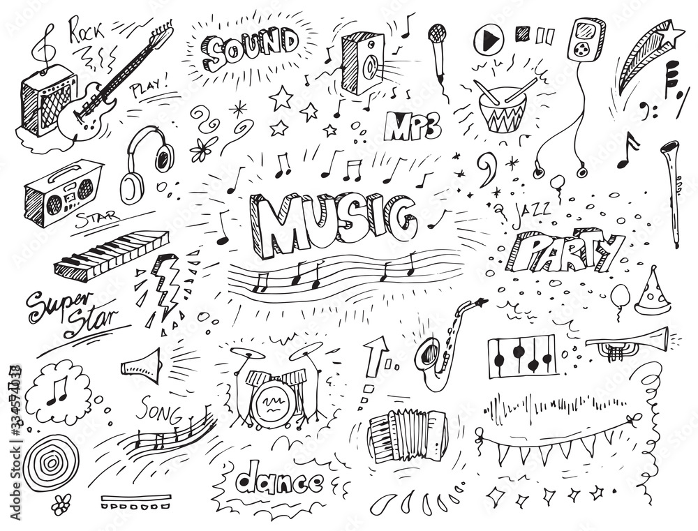

Finding the deeper cuts
Music videos and lyric searches turned casual listening into a habit of researching songs.
About the author
From radio hits to album-release nights, this page explains how the music became something worth studying.

I first listened to Kanye when I was in elementary school, even though I did not realize the music would become influential in my life. At first, it was just radio hits playing in stores or in the car.
I remember watching the Grammys in middle school and seeing several artists receive an award for "No Church in the Wild", from Jay-Z and Kanye's Watch the Throne. I looked up the song, watched the video, and started digging into the lyrics and production.
Milestones
Music videos and lyric searches turned casual listening into a habit of researching songs.
The first album I really anticipated was The Life of Pablo. Friends waited up for the release, followed the Tidal rollout, and tracked the leak conversations online.
The appeal now is not only the finished songs, but how samples, arrangements, and collaborators shape the final record.